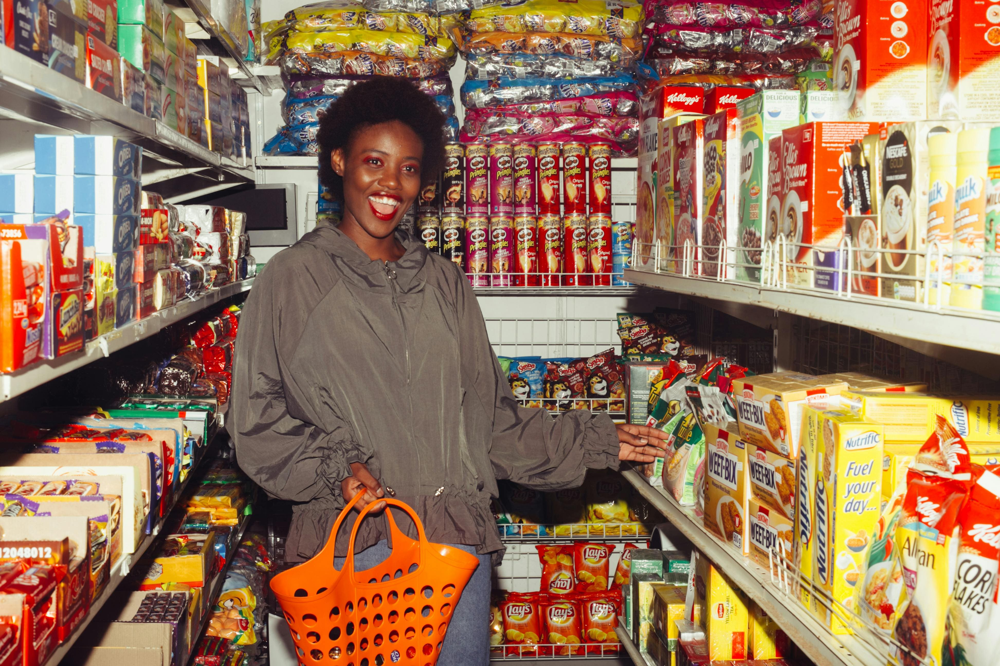
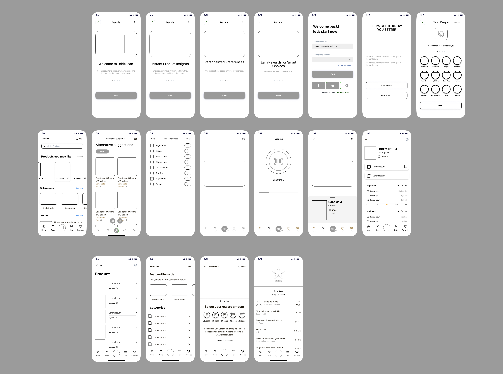

ORBIT SCAN
Helping shoppers make smarter food choices with a quick barcode scan.
Timeline - 3 months
Tools - Figma, Photoshop, Google Forms
Skills -
BACKGROUND
According to a 2023 report by the Food Marketing Institute, 65% of U.S. shoppers say they struggle to interpret food labels, and 72% want clearer ingredient information when buying groceries. Meanwhile, apps like Yuka and MyFitnessPal have seen a 30% increase in user engagement, reflecting growing demand for tools that simplify healthy decision-making. ... Last year, I watched a friend try to switch to a gluten-free diet for health reasons. Every grocery run became a frustrating guessing game — scanning labels, Googling additives, and trying to interpret vague health claims. That experience sparked a question in my mind: Why isn’t there a faster, more personalized way to shop smarter?

THE PROBLEM
Ever stood in a grocery aisle, feeling overwhelmed by:
Solution
OrbitScan was created to solve this problem by:
Project Goal
The goal of this project was to design a mobile app that helps people quickly understand what’s in the food products they buy while grocery shopping. ... By scanning a barcode, users get clear nutrition details, ingredient info, and healthier alternatives. The app was built to make the process—from scan to decision—simple, fast, and useful.
Outcome: Users can shop smarter, make healthier decisions, and feel confident about what they bring home.
🔷 DESIGN PROCESS: Double Diamond Framework
I used the Double Diamond approach to keep my design process user-focused and aligned with solving actual user pain points.

🔍 Discover
Goal: Understand user behavior, market gaps, and usability challenges.
Quantitative Research (Surveys), Competitive Analysis, Qualitative Research (Interviews)
...- Conducted a competitive analysis of food-scanning apps (Open Food Facts, Yuka, TruthIn) to identify functionality gaps and unmet user needs.
- Deployed surveys to capture behaviors, frustrations, and mental models around grocery shopping and interpreting food labels.
- Studied accessibility patterns and UI best practices to ensure inclusivity and intuitive design.
- Gathered insights from user interviews and online research to identify key themes like confusion over ingredients and decision fatigue.
🔎 Define
Goal: Synthesize insights into actionable problems and design goals.
User Persona, Problem Statement, MVP Project Direction (Plan & Features)
...- Analyzed survey and interview responses to define top user pain points — especially time pressure and unclear nutritional info.
- Created a user persona: Stephanie, a health-conscious working mom managing food choices for her family.
- Mapped Stephanie’s journey — from confusion in the grocery aisle to confidently selecting products with OrbitScan’s guidance.
- Identified opportunities to simplify decision-making and deliver clear, trustworthy insights at the point of purchase.
✏️ Develop
Goal: Ideate and prototype possible solutions.
Information Architecture, Wireframes, Early User Testing, Moodboard, Style Tile, Design Systems
...- Sketched early concepts and developed low-fidelity wireframes to explore user flows.
- Designed high-fidelity mockups in Figma emphasizing visual clarity, intuitive icons, and actionable nutrition labels.
- Created a UI style guide to ensure consistency in typography, color, and component usage across the app.
- Built an interactive prototype simulating real-world use cases, like scanning a product and comparing product alternatives.
🚀 Deliver
Goal: Ideate and prototype possible solutions.
Hi-fi Prototype, Second round Usability Testing
...- Sketched early concepts and developed low-fidelity wireframes to explore user flows.
- Designed high-fidelity mockups in Figma emphasizing visual clarity, intuitive icons, and actionable nutrition labels.
- Created a UI style guide to ensure consistency in typography, color, and component usage across the app.
- Built an interactive prototype simulating real-world use cases, like scanning a product and comparing product alternatives.
🔍 Discover
📝 QUANTITATIVE RESEARCH (Survey Insights)
Google Forms | 22 Responses
The goal of this survey was to understand users’ grocery shopping behavior, challenges with reading food labels, and openness to using apps for health-related product decisions. I distributed the survey among classmates, friends, and online forums with a focus on users with dietary goals or food sensitivities.
📋 Sample Interview Questions
...- How often do you read nutrition labels or ingredient lists while shopping?
- Have you ever used a mobile app to check food product health ratings or ingredients?
- What factors influence your decision when choosing food products? (e.g., brand, price, nutrition, ingredients)
- How confident do you feel when identifying whether a product is healthy for you?
- Would you find value in personalized recommendations based on your dietary needs (e.g., gluten-free, low-sugar)?
- Do you usually compare multiple products before deciding what to buy?

🧭 COMPETITIVE ANALYSIS
Here are some insights I found from the competitor analysis on the current market.
...- Limited Personalization: Most apps offer generic scores but lack tailored recommendations based on specific dietary needs, allergies, or health goals.
- Overwhelming Data Presentation: Nutrition details are often displayed in a technical or cluttered format, making it hard for everyday users to interpret at a glance.
- Inconsistent Ingredient Transparency: Some apps rely on crowdsourced data, leading to incomplete or outdated product information.
- No Guidance for New Shoppers: First-time users or those transitioning to a specific diet (e.g., gluten-free, keto) are left without onboarding, tips, or guided flows.
Competitive Feature Analysis

QUALITATIVE RESEARCH (User Interviews)
Zoom Remote & In-person | 4 Participants
The goal was to gain a deeper understanding of how users shop for groceries, what challenges they face when interpreting product information, and how they make health-related decisions in the store. All participants shop for groceries regularly, and at least two have dietary restrictions that impact their buying choices.
📋 Sample Interview Questions
- Q: Think about the last time you went grocery shopping—how do you decide whether a product is healthy or safe for you?
- Q: Do you use any tools, apps, or websites to check ingredients or nutrition before making a purchase? What’s your experience with them?
- Q: Have you ever felt confused or overwhelmed while trying to understand food labels or health claims on packaging?
- What would make your decision-making process easier while shopping—more visuals, clear scoring, or recommendations?
- How do you currently compare similar products? What factors do you look for first (e.g., price, ingredients, brand)?
- Would you find it helpful if an app suggested products tailored to your health needs (e.g., low sodium, allergen-free)?
Insights From Interviews
This qualitative research was conducted with 4 participants, using semi-structured interviews. The questions focused on shopping behavior, product comparison habits, decision-making confidence, and openness to personalization.
Insights were synthesized using affinity mapping to uncover key user pain points and opportunities for OrbitScan. The responses showed strong thematic saturation in three core areas: decision-making challenges, transparency and trust, and personalization needs.
Decision making challenge -
Participants often feel overwhelmed or confused by product packaging, leading to low confidence in their decisions.
Many spend considerable time researching products online or comparing labels in-store, yet still feel uncertain.
Lack of Transparency -
Participants expressed distrust toward health claims like “all-natural” or “immune-boosting” without clear evidence.
Many users found nutrition labels too technical or cluttered, especially when in a hurry.
Desire for personalization -
Some users focus on reducing sugar; others care about allergens or specific diets (gluten-free, low sodium).
Many rely on nutritionists or doctors, highlighting an opportunity for apps to fill that guidance gap.
🔍 Define
🧭 WHO ARE WE DESIGNING FOR?
The individuals I interviewed are graduate students as well as parents managing household grocery shopping. Each of them shops for groceries at least once a week and has experience using apps such as MyFitnessPal or Google to research food products. Most shared challenges around reading food labels, interpreting nutrition data, and making confident product decisions—especially when managing allergies, switching diets, or trying to eat healthier on a student budget.
One key persona that emerged is Stephanie — a busy, health-conscious mom juggling family needs, limited time, and a desire to make informed food choices.
Persona


✏️ Develop
USER FLOW DIAGRAM

LOW-FIDELITY WIREFRAME

LOGO ITERATION

When designing, the goal was to create a logo that visually communicated the app’s mission helping users make healthier food choices through simple scanning. Early sketches with food and barcode imagery felt too generic and failed to capture the app’s holistic nature.
I pivoted to the concept of an “orbit” a circular symbol representing a complete, 360-degree understanding of product information paired with subtle barcode lines to reflect the scanning functionality.
TYPOGRAPHY
I chose a clean and modern font Audiowide & Merriweather that aligns with the app's minimalist design, emphasizing simplicity and clarity in the user interface.

COLOR PALETTE

DESIGN SYSTEMS

🚀 Deliver
FINAL UI SCREENS
ONBOARDING SCREENS
Orbit Scan's onboarding introduces the app's core functionalities across four screens. It highlights instant health insights through product scanning, identification of harmful additives, and a reward system for making smart choices, encouraging users to begin.


HOME SCREEN
The Discover home screen presents users with personalized 'Products you may like' alongside 'E Gift Vouchers'. It also features an 'Articles' section offering informative content on healthy eating, packaging swaps, gut health, and clean bread options.
SCANNER
Left Screen: The left screen shows the detailed health information for a product after a scan. It highlights both positive and negative attributes of its ingredients.
Right Screen: The right screen shows the options to "Add to Favorites", view the "Scoring method", and offers "Recommendations" for similar products.


ADDITIVE ANALYSIS
Left Screen: The left screen shows the detailed health information for a product after a scan. It highlights both positive and negative attributes of its ingredients.
Right Screen: The right screen shows the options to "Add to Favorites", view the "Scoring method", and offers "Recommendations" for similar products.
CATEGORIES
The List of Categories screen allows users to easily browse top food product categories, such as Milk, Coffee, Juices, and Chocolates. Each category is visually supported with intuitive icons to enhance quick recognition and ease of navigation.
The purpose of this screen is to streamline product discovery by organizing items into familiar categories, helping users quickly find and scan items of interest. This design supports faster decision-making while maintaining a clean and user-friendly browsing experience.


REWARDS
Left Screen: Users can explore featured rewards and browse categories like Retail, Health, and Fashion. This screen motivates users by showcasing a range of options they can unlock with their earned points.
Right Screen: After selecting a reward, users choose the reward amount based on their available points. A clear, simple layout helps users quickly understand the redemption process and complete their reward claim with confidence.
Result
OrbitScan resulted in a fully designed and interactive high-fidelity prototype, showcasing a seamless barcode scanning experience and personalized nutritional insights. I prepared detailed screens, user flows, and export-ready assets to guide future development efforts.
View Prototype
MORE PROJECTS
View All